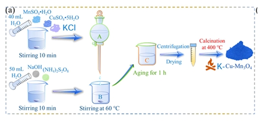
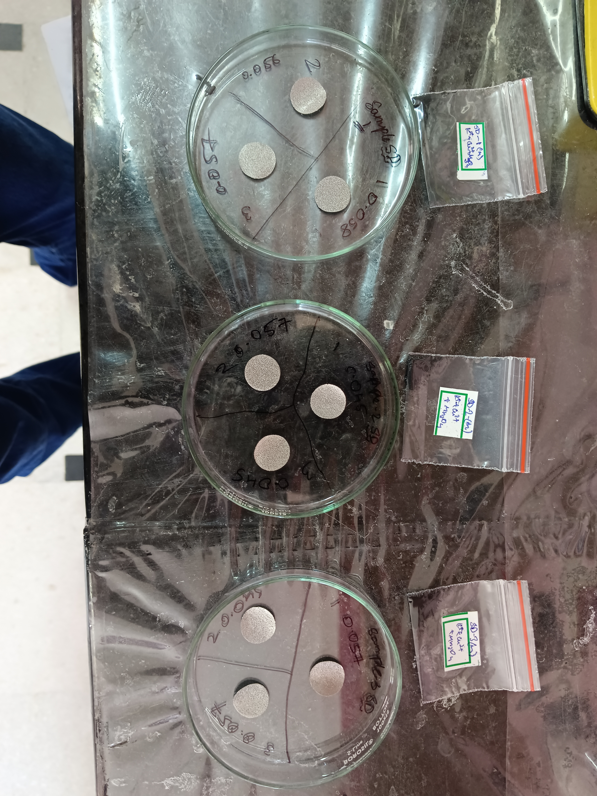
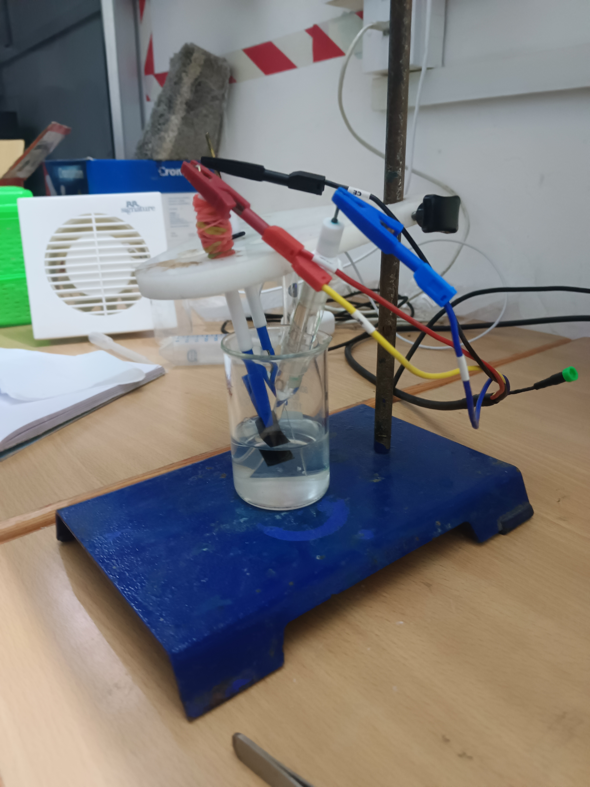

Robell Material MRC
Research Intern
Effect of Cu²⁺ and K⁺ Co-doping on the Charge Storage Mechanism of Mn₃O₄ in Aqueous Zinc-Ion Batteries
Why this matters
Lithium-ion batteries are everywhere, but lithium is expensive, flammable, and mined in a handful of places. Aqueous zinc-ion batteries are a safer, cheaper alternative — they use water-based electrolytes and zinc metal, which is abundant and easy to handle. The challenge is finding a cathode material that can store a lot of charge, survive many cycles, and still work well when charged or discharged quickly.
Manganese oxide (Mn₃O₄) is a promising, low-cost candidate for this cathode. On its own, though, it suffers from poor electrical conductivity and sluggish ion movement, which limits how much charge it can actually store and how fast it can do it.
This project asks a simple question: can doping Mn₃O₄ with small amounts of copper (Cu²⁺) and potassium (K⁺) improve these weaknesses — and if so, which dopant does what?
To answer that, three versions of the material were made, each with a different Cu²⁺-to-K⁺ ratio, and tested using cyclic voltammetry (CV) and galvanostatic charge-discharge (GCD).
The idea behind the doping
Two different elements were added to the Mn₃O₄ lattice for two different reasons.
- Cu²⁺ is expected to improve electrical conductivity. Copper ions inside the manganese oxide framework can create easier pathways for electrons and can also tune the redox reactions of manganese.
- K⁺ is expected to pre-intercalate the crystal lattice, meaning potassium ions occupy positions in the structure and help open pathways for Zn²⁺ movement during charging and discharging.
Three compositions were synthesized to investigate this trade-off:
| Sample | Cu²⁺ | K⁺ | Design Intent |
|---|---|---|---|
| S1 | 3.25% | 5% | Baseline, moderate doping of both |
| S2 | 2.0% | 7.5% | Higher K⁺ — more oxygen vacancies, more open tunnels |
| S3 | 5.0% | 3.75% | Higher Cu²⁺ — conductivity and redox tuning |
How the material was made
All three samples were synthesized by hydrothermal co-precipitation.
- Manganese, copper, and potassium salts (MnSO₄·H₂O, CuSO₄·5H₂O, KCl) were dissolved together in water.
- Separately, a strongly alkaline solution (NaOH, pH ≈ 12) with ammonium persulfate as an oxidizing agent was heated to 60 °C.
- The metal-salt solution was added dropwise into the hot alkaline solution, precipitating the metals as hydroxides while partially oxidizing the manganese.
- The mixture was aged for one hour, then washed repeatedly with water and ethanol and dried.
- Finally, the dried powder was calcined at 400 °C for 3 hours, converting it into the doped Mn₃O₄ oxide.
The resulting powder was mixed with conductive carbon and PVDF binder in an 80:10:10 ratio, coated onto graphite foil, and punched into 16 mm cathodes. These were tested against a zinc foil anode in a 2 M ZnSO₄ + 0.2 M MnSO₄ aqueous electrolyte.
How the material was tested
Two complementary electrochemical techniques were used to characterize each sample.
- Galvanostatic Charge-Discharge (GCD): the current is held constant while the voltage is measured during charging and discharging. This provides information about specific capacitance, energy density, and internal resistance.
- Cyclic Voltammetry (CV): the voltage is swept at a fixed scan rate while current is measured. This helps understand whether charge storage is dominated by surface-controlled capacitive behaviour or slower diffusion-controlled processes.
Each sample was tested by CV at 10, 50, and 100 mV/s and by GCD at current densities of 1, 5, and 10 A/g.
Results
Specific capacitance from CV
| Scan Rate | S1 (F/g) | S2 (F/g) | S3 (F/g) |
|---|---|---|---|
| 10 mV/s | 109.8 | 136.8 | 171.4 |
| 50 mV/s | 52.2 | 77.2 | 109.3 |
| 100 mV/s | 33.7 | 65.0 | 77.6 |
S3, the high-Cu²⁺ composition, delivered the highest capacitance at every scan rate tested. However, raw capacitance alone does not tell the complete story. Rate retention becomes important when the material is pushed to operate faster.
Rate retention
| Sample | Retention |
|---|---|
| S1 | 30.7% |
| S2 | 47.5% |
| S3 | 45.3% |
Here the trend changes. S2, the high-K⁺ composition, retains the largest fraction of its capacitance at fast scan rates, while S1 loses the most performance as the scan rate increases.
Charge storage mechanism
The b-value describes whether charge storage behaves more like a diffusion-controlled process or a capacitive process. A value near 0.5 indicates stronger diffusion behaviour, while a value near 1 indicates stronger capacitive behaviour.
| Sample | b Anodic | b Cathodic | Capacitive Fraction |
|---|---|---|---|
| S1 | 0.611 | 0.609 | 31.7% |
| S2 | 0.690 | 0.794 | 62.4% |
| S3 | 0.688 | 0.821 | 64.4% |
Both S2 and S3 shift noticeably toward capacitive behaviour compared with S1. S3 has the highest cathodic b-value, suggesting stronger capacitive behaviour during the reduction process.
GCD performance — Sample 1
| Current Density | Cs (F/g) | Specific Capacity (mAh/g) | Energy Density (Wh/kg) |
|---|---|---|---|
| 1 A/g | 198.3 | 58.6 | 31.2 |
| 5 A/g | 60.0 | 14.8 | 6.6 |
| 10 A/g | 32.9 | 6.4 | 2.2 |
At 1 A/g, S1 showed a measured internal resistance of 8.9 Ω. Its capacitance retention from 1 to 10 A/g was 16.6%, showing a significant loss in performance as the current demand increased.
What it all means
Putting the CV and GCD results together gives a clear picture of the different roles played by Cu²⁺ and K⁺.
- Cu²⁺ acts as the conductivity and raw-capacity lever. Higher Cu²⁺ content in S3 gives the highest capacitance at every tested scan rate and shifts the reduction reaction toward faster, more capacitive behaviour.
- K⁺ acts as the rate-retention lever. S2 does not provide the highest raw capacitance, but it retains more of its performance when the material operates at higher rates.
- Moderate co-doping in S1 does not maximize either effect, making it weaker in both capacitance and rate retention compared with the more strongly doped compositions.
In short, higher Cu²⁺ favours maximum charge-storage performance, while higher K⁺ favours rate retention. The ideal composition may therefore lie somewhere between S2 and S3, balancing both effects.


